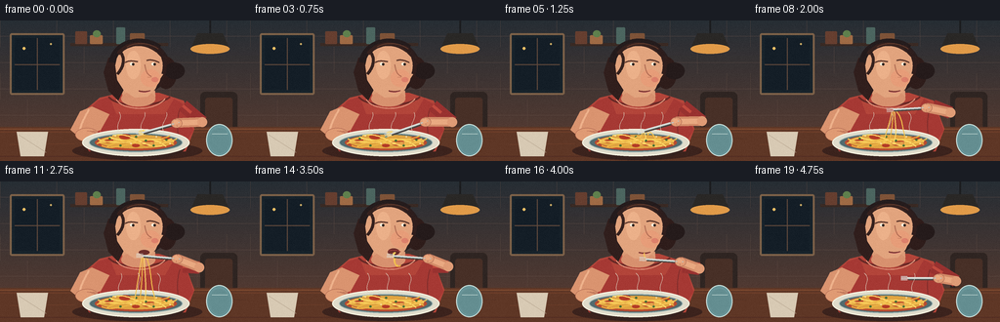
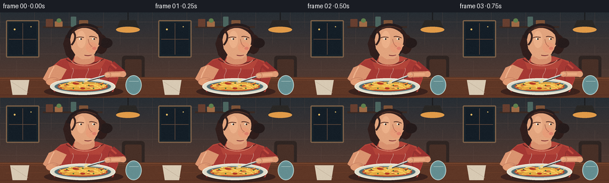

CODING AGENTS AS PIXEL WORLD MODELS
traex/GPT-5.6-Sol · motion_rationality_0005
点击播放 · 原生 RGB 像素
逐轮保存的候选
回放视频、检查图与代码变化。
每份候选均可单独播放。实际图片检查记录在下方工具轨迹中。
候选 01播放与检查图
点击播放 · 原生 RGB 像素


展开代码变化
--- 上一保存版本
+++ 本次保存版本
@@ -0,0 +1,282 @@
+from pathlib import Path
+import math
+import numpy as np
+from PIL import Image, ImageDraw, ImageFilter
+import artifact_io
+
+W,H,N = 256,144,20
+S=4
+rng=np.random.default_rng(12)
+
+def scp(p): return tuple(int(round(v*S)) for v in p)
+def box(b): return tuple(int(round(v*S)) for v in b)
+def bezier(p0,p1,p2,p3,n=35):
+ pts=[]
+ for u in np.linspace(0,1,n):
+ v=1-u
+ pts.append((v**3*p0[0]+3*v*v*u*p1[0]+3*v*u*u*p2[0]+u**3*p3[0],
+ v**3*p0[1]+3*v*v*u*p1[1]+3*v*u*u*p2[1]+u**3*p3[1]))
+ return pts
+
+def line(d, pts, fill, width, joint='curve'):
+ d.line([scp(p) for p in pts], fill=fill, width=max(1,int(width*S)), joint=joint)
+def poly(d, pts, fill): d.polygon([scp(p) for p in pts], fill=fill)
+def ell(d,b,fill,outline=None,width=1): d.ellipse(box(b),fill=fill,outline=outline,width=max(1,int(width*S)))
+def rect(d,b,fill,outline=None,width=1,r=0):
+ if r: d.rounded_rectangle(box(b),radius=int(r*S),fill=fill,outline=outline,width=max(1,int(width*S)))
+ else: d.rectangle(box(b),fill=fill,outline=outline,width=max(1,int(width*S)))
+def curve(d,p0,p1,p2,p3,fill,width): line(d,bezier(p0,p1,p2,p3),fill,width)
+
+def mix(a,b,t): return tuple(a[i]*(1-t)+b[i]*t for i in range(2))
+def smooth(x): return x*x*(3-2*x)
+def color_lerp(a,b,t): return tuple(int(a[i]*(1-t)+b[i]*t) for i in range(3))
+
+def background():
+ # warm evening kitchen gradient
+ yy=np.linspace(0,1,H*S)[:,None,None]
+ top=np.array([39,46,53])[None,None,:]
+ bot=np.array([95,62,49])[None,None,:]
+ arr=np.tile((top*(1-yy)+bot*yy),(1,W*S,1)).astype(np.uint8)
+ im=Image.fromarray(arr,'RGB')
+ d=ImageDraw.Draw(im)
+ # tiled wall and faint grout
+ for y in [16,43,70,97]: line(d,[(0,y),(256,y)],(103,82,72),0.45)
+ for row,y in enumerate([0,27,54,81]):
+ for x in range((-30 if row%2 else 0),257,58): line(d,[(x,y),(x,y+27)],(96,76,68),0.45)
+ # window/night panel
+ rect(d,(10,13,66,76),(24,35,43),(126,98,73),2,2)
+ rect(d,(15,18,61,71),(20,30,39))
+ line(d,[(38,18),(38,71)],(99,75,61),1)
+ line(d,[(15,45),(61,45)],(99,75,61),1)
+ ell(d,(23,27,26,30),(235,190,102)); ell(d,(51,23,53,25),(202,171,102))
+ # pendant lamp and warm glow
+ glow=Image.new('RGBA',im.size,(0,0,0,0)); gd=ImageDraw.Draw(glow)
+ ell(gd,(180*S,5*S,248*S,77*S),(255,190,91,18))
+ glow=glow.filter(ImageFilter.GaussianBlur(11*S)); im=Image.alpha_composite(im.convert('RGBA'),glow).convert('RGB'); d=ImageDraw.Draw(im)
+ line(d,[(215,0),(215,13)],(28,29,31),2)
+ poly(d,[(202,13),(228,13),(235,29),(195,29)],(42,40,38))
+ ell(d,(195,24,235,34),(225,155,73))
+ # shelf + kitchen objects
+ rect(d,(72,23,172,26),(58,42,36)); rect(d,(77,11,89,24),(103,63,48),r=1)
+ rect(d,(92,15,105,24),(159,107,69),r=1); ell(d,(95,10,103,17),(95,128,77))
+ rect(d,(119,7,128,24),(76,102,96),r=1); rect(d,(133,13,148,24),(126,83,56),r=1)
+ # chair silhouette
+ rect(d,(205,73,243,122),(47,37,34),r=5); rect(d,(210,79,238,126),(72,48,39),r=3)
+ return im
+
+BG=background()
+
+def fork_pose(i):
+ # tine position and handle/grip center
+ if i<=4:
+ u=i/4
+ tip=(146+2*math.sin(i*1.6),116-1.2*math.cos(i*1.6))
+ grip=(179+1.5*math.cos(i*1.6),105+1.3*math.sin(i*1.6))
+ stage='twirl'; amt=u
+ elif i<=11:
+ u=smooth((i-4)/7)
+ tip=mix((147,115),(146,76),u)
+ grip=mix((180,105),(181,79),u)
+ stage='lift'; amt=u
+ elif i<=15:
+ u=(i-11)/4
+ tip=(146+0.8*u,76+0.2*math.sin(u*math.pi))
+ grip=(181+1.8*u,79-0.2*u)
+ stage='eat'; amt=u
+ else:
+ u=smooth((i-15)/4)
+ tip=mix((147,76),(161,99),u)
+ grip=mix((183,79),(193,99),u)
+ stage='lower'; amt=u
+ return tip,grip,stage,amt
+
+def draw_scene(i):
+ im=BG.copy(); d=ImageDraw.Draw(im)
+ tip,grip,stage,amt=fork_pose(i)
+ # table and softly cast shadows
+ rect(d,(0,109,256,144),(95,55,38))
+ for y,c in [(111,(130,76,48)),(114,(111,62,42)),(139,(84,46,35))]: line(d,[(0,y),(256,y)],c,1)
+ line(d,[(10,127),(76,126)],(128,71,45),0.5); line(d,[(190,119),(252,121)],(74,43,35),0.6)
+ ell(d,(74,124,207,143),(60,35,29))
+
+ # torso behind arms, coral short-sleeve top
+ poly(d,[(89,90),(102,79),(123,74),(163,74),(188,82),(199,111),(190,134),(91,134),(80,112)],(179,69,58))
+ # clothing shadow and neckline
+ poly(d,[(88,95),(100,82),(112,78),(119,96),(169,96),(178,80),(190,87),(198,113),(184,134),(91,134)],(166,57,52))
+ curve(d,(111,78),(120,89),(160,90),(174,78),(105,41,38),2)
+ curve(d,(119,81),(126,92),(157,94),(169,80),(229,154,128),1)
+ # little fabric seam/highlights
+ curve(d,(99,91),(103,105),(104,120),(100,132),(205,87,70),1)
+ curve(d,(184,90),(180,103),(181,116),(185,129),(129,46,44),1)
+
+ # neck
+ poly(d,[(124,67),(126,82),(136,88),(151,86),(159,78),(158,63)],(220,155,119))
+ ell(d,(124,72,159,88),(216,145,111))
+
+ # back ear and face shadow
+ ell(d,(111,43,124,62),(207,136,103),(129,78,64),0.7)
+ curve(d,(116,49),(112,50),(115,57),(120,56),(162,96,77),1)
+
+ # hair mass (behind face), bob/ponytail
+ ell(d,(111,20,174,75),(43,30,30))
+ poly(d,[(111,38),(106,53),(111,72),(121,82),(128,68),(124,37)],(49,31,29))
+ ell(d,(159,37,181,70),(47,29,27))
+ ell(d,(168,43,189,60),(37,27,27))
+
+ # face with profile-ish 3/4 silhouette
+ face=[(121,32),(128,25),(145,23),(159,28),(168,39),(167,55),(163,61),(159,70),(151,78),(138,79),(127,72),(120,61),(118,46)]
+ poly(d,face,(226,164,126))
+ # warm cheek and face highlight
+ ell(d,(144,50,164,68),(231,157,121)); ell(d,(129,31,144,60),(236,177,138))
+ # hair cap and locks
+ curve(d,(115,43),(117,23),(144,15),(163,28),(37,28,29),7)
+ curve(d,(121,34),(133,18),(158,22),(169,40),(54,34,31),4)
+ curve(d,(122,31),(129,38),(126,48),(120,55),(54,34,31),3)
+ curve(d,(157,26),(169,33),(170,46),(167,55),(47,30,29),4)
+ curve(d,(130,27),(140,21),(154,23),(162,29),(95,57,43),1)
+
+ # eyebrows / eyes looking toward fork
+ curve(d,(128,43),(133,40),(138,42),(141,42),(86,49,39),1.25)
+ curve(d,(150,41),(155,39),(161,42),(163,43),(81,45,36),1.25)
+ ell(d,(133,43,137,46),(249,244,225)); ell(d,(135,43.4,137.4,46),(47,35,31))
+ ell(d,(155,43,159,46),(249,244,225)); ell(d,(157,43.4,159.4,46),(47,35,31))
+ # nose
+ curve(d,(148,45),(149,52),(151,56),(155,57),(173,105,81),1)
+ line(d,[(151,58),(155,58)],(197,124,95),0.7)
+ # cheek accent
+ ell(d,(155,58,162,63),(221,128,107))
+
+ # mouth changes with eating
+ chew = stage=='lower' and i%2==0
+ if stage=='eat':
+ opening=3.0*(1-0.55*amt)
+ ell(d,(141,69.5-opening/2,153,74.5+opening/2),(105,45,42))
+ curve(d,(142,71),(146,69.5),(151,70),(154,72),(159,65,61),0.8)
+ elif stage=='lift' and amt>.72:
+ ell(d,(142,70,153,75),(109,46,43))
+ else:
+ y=72+(0.6 if chew else 0)
+ curve(d,(142,y),(146,y+1),(150,y+1),(154,y-0.2),(119,51,48),1.3)
+ curve(d,(143,y+1),(147,y+2),(151,y+1.6),(154,y),(227,136,126),0.65)
+
+ # left arm rests on table and lightly steadies bowl
+ poly(d,[(94,88),(82,93),(72,112),(83,121),(103,112),(112,96)],(218,148,112))
+ curve(d,(91,91),(86,100),(80,110),(82,117),(239,178,140),2)
+ # left hand beside plate
+ ell(d,(77,110,101,124),(224,155,116),(176,104,81),0.6)
+ for k in range(3): curve(d,(89+k*3,113),(95+k*2,113),(99+k,117),(100+k,119),(185,112,87),0.55)
+
+ # right arm with shoulder->elbow->wrist, continuously connected
+ shoulder=(187,87)
+ if stage=='twirl': elbow=(207,104)
+ elif stage=='lift': elbow=mix((207,104),(204,88),amt)
+ elif stage=='eat': elbow=(203,87)
+ else: elbow=mix((203,87),(211,102),amt)
+ wrist=grip
+ # sleeve around shoulder/upper arm
+ line(d,[shoulder,elbow],(153,50,48),13)
+ line(d,[(187,87),mix(shoulder,elbow,.42)],(193,74,62),3)
+ # forearm skin under hand
+ line(d,[elbow,wrist],(211,139,104),10)
+ line(d,[elbow,wrist],(233,169,129),5.8)
+ # elbow soft contour
+ ell(d,(elbow[0]-5,elbow[1]-5,elbow[0]+5,elbow[1]+5),(224,156,118))
+
+ # plate, rim, spaghetti mound (foreground over hand/torso but under fork)
+ ell(d,(90,115,190,143),(53,34,30))
+ ell(d,(84,111,194,139),(225,221,204),(245,242,224),1.4)
+ ell(d,(91,115,187,135),(82,107,111),(169,188,184),1)
+ ell(d,(97,117,181,133),(183,75,48))
+ ell(d,(101,117,178,131),(224,164,65))
+ # sauce patches
+ for x,y,r in [(111,123,5),(128,119,6),(151,125,7),(169,121,5),(139,128,4)]:
+ ell(d,(x-r,y-r*.45,x+r,y+r*.45),(181,61,38))
+ # tangled noodles on plate, deterministic curves
+ noodle_cols=[(247,202,89),(238,183,69),(255,218,106)]
+ noodle_paths=[((102,124),(118,114),(142,133),(176,121)),
+ ((104,128),(122,137),(145,113),(178,127)),
+ ((112,119),(129,129),(150,113),(170,129)),
+ ((99,126),(124,118),(153,135),(181,121)),
+ ((109,130),(129,116),(154,127),(174,118)),
+ ((115,118),(135,112),(147,133),(166,128)),
+ ((100,121),(124,132),(145,116),(178,124))]
+ for j,p in enumerate(noodle_paths): curve(d,*p,noodle_cols[j%3],1.35)
+ # herbs and parmesan flecks
+ for x,y in [(112,121),(123,128),(139,119),(157,128),(170,122),(149,123)]:
+ ell(d,(x-1,y-1,x+1.5,y+1),(68,109,54))
+ for x,y in [(118,118),(134,126),(160,119),(174,126)]: ell(d,(x-.7,y-.7,x+.7,y+.7),(246,221,162))
+
+ # lifted spaghetti: physically attached to bite/fork and plate; progressively shortens
+ if stage=='twirl':
+ # coils wrapping around fork tip
+ for q in range(3):
+ rr=4.5-q*1.25
+ d.arc(box((tip[0]-rr,tip[1]-rr*.55,tip[0]+rr,tip[1]+rr*.55)),200,540,fill=(251,210,92),width=int(1.2*S))
+ elif stage=='lift':
+ # as fork rises, strands stretch from fork down to mound
+ bottom_y=125
+ for j,dx in enumerate([-3,0,3]):
+ p0=(tip[0]+dx*.45,tip[1]+2)
+ p1=(tip[0]-4+j*3,tip[1]+12+8*amt)
+ p2=(139+j*6,bottom_y-12)
+ p3=(137+j*5,bottom_y)
+ curve(d,p0,p1,p2,p3,noodle_cols[j],1.2)
+ # a loose swinging strand
+ swing=3*math.sin(i*.85)
+ curve(d,(tip[0]+3,tip[1]+1),(tip[0]+9+swing,tip[1]+10),(153+swing,106),(159,121),(246,198,77),1)
+ elif stage=='eat':
+ # small bundle travels from fork tines left into mouth and is slurped shorter
+ mouth=(149,73)
+ for j,dy in enumerate([-1,1,3]):
+ start=(tip[0]+1,tip[1]+dy*.35)
+ curve(d,start,(145,75+dy),(148,72+dy*.35),mouth,noodle_cols[j],1.2)
+ hang=(1-amt)*25+3
+ for j in range(2):
+ curve(d,(148+j*2,76),(145-j,80+hang*.55),(153+j*2,83+hang*.7),(151+j*3,76+hang),noodle_cols[j],1.1)
+ elif stage=='lower' and amt<.35:
+ # final noodle disappears into lips
+ length=6*(1-amt/.35)
+ curve(d,(148,73),(146,75),(149,75+length*.5),(148,75+length),(246,200,80),1.2)
+
+ # fork: silver shaft from grip to tip, dark offset adds contrast
+ vx=tip[0]-grip[0]; vy=tip[1]-grip[1]; L=max(1,math.hypot(vx,vy)); ux=vx/L; uy=vy/L; px=-uy; py=ux
+ # shaft shadow / shine
+ line(d,[(grip[0]+1,grip[1]+1),(tip[0]+1,tip[1]+1)],(70,69,66),2.4)
+ line(d,[grip,tip],(205,213,210),2)
+ line(d,[(grip[0],grip[1]-0.5),(tip[0],tip[1]-0.5)],(246,247,235),0.7)
+ # fork neck and four distinct tines extending beyond tip toward food/mouth
+ tine_len=6.5
+ for k in [-1.5,-.5,.5,1.5]:
+ a=(tip[0]+px*k*1.15,tip[1]+py*k*1.15)
+ b=(a[0]+ux*tine_len,a[1]+uy*tine_len)
+ line(d,[a,b],(220,225,220),0.85)
+ # hand grips handle at far endpoint with thumb and curled fingers
+ ell(d,(grip[0]-5.5,grip[1]-4.5,grip[0]+6,grip[1]+5),(226,157,118),(174,103,80),0.6)
+ # handle visible through fingers, thumb over top
+ line(d,[(grip[0]-3*ux,grip[1]-3*uy),(grip[0]+5*ux,grip[1]+5*uy)],(189,198,197),1.4)
+ curve(d,(grip[0]-4*px,grip[1]-4*py),(grip[0]-1,grip[1]-2),(grip[0]+2,grip[1]-1),(grip[0]+4*px,grip[1]+4*py),(188,111,85),0.65)
+ ell(d,(grip[0]-3,grip[1]-3,grip[0]+2,grip[1]+1.5),(236,170,129))
+
+ # subtle steam, moving but anchored to hot plate
+ for j in range(3):
+ phase=i*.25+j
+ x=122+j*22+2*math.sin(phase)
+ curve(d,(x,114),(x-5,105),(x+5,101),(x+math.sin(phase)*3,94),(224,217,199),0.55)
+
+ # foreground glass and napkin give depth
+ poly(d,[(17,114),(49,114),(45,139),(21,139)],(216,202,180))
+ line(d,[(19,117),(47,135)],(184,167,145),0.7)
+ ell(d,(211,106,238,139),(105,149,153),(200,223,218),1)
+ ell(d,(214,110,235,136),(100,142,145))
+ line(d,[(217,116),(233,116)],(210,230,222),0.7)
+
+ # downsample and add restrained film grain
+ im=im.resize((W,H),Image.Resampling.LANCZOS)
+ arr=np.array(im).astype(np.int16)
+ noise=rng.normal(0,1.15,(H,W,1))
+ arr=np.clip(arr+noise,0,255).astype(np.uint8)
+ return arr
+
+frames=np.stack([draw_scene(i) for i in range(N)],axis=0)
+assert frames.shape==(20,144,256,3) and frames.dtype==np.uint8
+artifact_io.save(frames,Path(__file__).resolve().parent)
可观测工具轨迹
实际执行的命令与返回图片。
命令 1exit 0
/bin/bash -lc "cat prompt.txt && printf '\\n---RULES---\\n' && cat GENERATION_RULES.md && printf '\\n---SPEC---\\n' && cat task_spec.json"
命令 2exit 0
/bin/bash -lc "find . -maxdepth 2 -type f -printf '%p\\n' | sort && printf '\\nTools:\\n' && command -v ffmpeg; command -v convert; command -v blender; command -v python3"
命令 3exit 0
/bin/bash -lc 'cat artifact_io.py'
命令 4exit 0
/bin/bash -lc "cat > generate.py <<'PY'
from pathlib import Path
import math
import numpy as np
from PIL import Image, ImageDraw, ImageFilter
import artifact_io
W,H,N = 256,144,20
S=4
rng=np.random.default_rng(12)
def scp(p): return tuple(int(round(v*S)) for v in p)
def box(b): return tuple(int(round(v*S)) for v in b)
def bezier(p0,p1,p2,p3,n=35):
pts=[]
for u in np.linspace(0,1,n):
v=1-u
pts.append((v**3*p0[0]+3*v*v*u*p1[0]+3*v*u*u*p2[0]+u**3*p3[0],
v**3*p0[1]+3*v*v*u*p1[1]+3*v*u*u*p2[1]+u**3*p3[1]))
return pts
def line(d, pts, fill, width, joint='curve'):
d.line([scp(p) for p in pts], fill=fill, width=max(1,int(width*S)), joint=joint)
def poly(d, pts, fill): d.polygon([scp(p) for p in pts], fill=fill)
def ell(d,b,fill,outline=None,width=1): d.ellipse(box(b),fill=fill,outline=outline,width=max(1,int(width*S)))
def rect(d,b,fill,outline=None,width=1,r=0):
if r: d.rounded_rectangle(box(b),radius=int(r*S),fill=fill,outline=outline,width=max(1,int(width*S)))
else: d.rectangle(box(b),fill=fill,outline=outline,width=max(1,int(width*S)))
def curve(d,p0,p1,p2,p3,fill,width): line(d,bezier(p0,p1,p2,p3),fill,width)
def mix(a,b,t): return tuple(a[i]*(1-t)+b[i]*t for i in range(2))
def smooth(x): return x*x*(3-2*x)
def color_lerp(a,b,t): return tuple(int(a[i]*(1-t)+b[i]*t) for i in range(3))
def background():
# warm evening kitchen gradient
yy=np.linspace(0,1,H*S)[:,None,None]
top=np.array([39,46,53])[None,None,:]
bot=np.array([95,62,49])[None,None,:]
arr=np.tile((top*(1-yy)+bot*yy),(1,W*S,1)).astype(np.uint8)
im=Image.fromarray(arr,'RGB')
d=ImageDraw.Draw(im)
# tiled wall and faint grout
for y in [16,43,70,97]: line(d,[(0,y),(256,y)],(103,82,72),0.45)
for row,y in enumerate([0,27,54,81]):
for x in range((-30 if row%2 else 0),257,58): line(d,[(x,y),(x,y+27)],(96,76,68),0.45)
# window/night panel
rect(d,(10,13,66,76),(24,35,43),(126,98,73),2,2)
rect(d,(15,18,61,71),(20,30,39))
line(d,[(38,18),(38,71)],(99,75,61),1)
line(d,[(15,45),(61,45)],(99,75,61),1)
ell(d,(23,27,26,30),(235,190,102)); ell(d,(51,23,53,25),(202,171,102))
# pendant lamp and warm glow
glow=Image.new('RGBA',im.size,(0,0,0,0)); gd=ImageDraw.Draw(glow)
ell(gd,(180*S,5*S,248*S,77*S),(255,190,91,18))
glow=glow.filter(ImageFilter.GaussianBlur(11*S)); im=Image.alpha_composite(im.convert('RGBA'),glow).convert('RGB'); d=ImageDraw.Draw(im)
line(d,[(215,0),(215,13)],(28,29,31),2)
poly(d,[(202,13),(228,13),(235,29),(195,29)],(42,40,38))
ell(d,(195,24,235,34),(225,155,73))
# shelf + kitchen objects
rect(d,(72,23,172,26),(58,42,36)); rect(d,(77,11,89,24),(103,63,48),r=1)
rect(d,(92,15,105,24),(159,107,69),r=1); ell(d,(95,10,103,17),(95,128,77))
rect(d,(119,7,128,24),(76,102,96),r=1); rect(d,(133,13,148,24),(126,83,56),r=1)
# chair silhouette
rect(d,(205,73,243,122),(47,37,34),r=5); rect(d,(210,79,238,126),(72,48,39),r=3)
return im
BG=background()
def fork_pose(i):
# tine position and handle/grip center
if i<=4:
u=i/4
tip=(146+2*math.sin(i*1.6),116-1.2*math.cos(i*1.6))
grip=(179+1.5*math.cos(i*1.6),105+1.3*math.sin(i*1.6))
stage='twirl'; amt=u
elif i<=11:
u=smooth((i-4)/7)
tip=mix((147,115),(146,76),u)
grip=mix((180,105),(181,79),u)
stage='lift'; amt=u
elif i<=15:
u=(i-11)/4
tip=(146+0.8*u,76+0.2*math.sin(u*math.pi))
grip=(181+1.8*u,79-0.2*u)
stage='eat'; amt=u
else:
u=smooth((i-15)/4)
tip=mix((147,76),(161,99),u)
grip=mix((183,79),(193,99),u)
stage='lower'; amt=u
return tip,grip,stage,amt
def draw_scene(i):
im=BG.copy(); d=ImageDraw.Draw(im)
tip,grip,stage,amt=fork_pose(i)
# table and softly cast shadows
rect(d,(0,109,256,144),(95,55,38))
for y,c in [(111,(130,76,48)),(114,(111,62,42)),(139,(84,46,35))]: line(d,[(0,y),(256,y)],c,1)
line(d,[(10,127),(76,126)],(128,71,45),0.5); line(d,[(190,119),(252,121)],(74,43,35),0.6)
ell(d,(74,124,207,143),(60,35,29))
# torso behind arms, coral short-sleeve top
poly(d,[(89,90),(102,79),(123,74),(163,74),(188,82),(199,111),(190,134),(91,134),(80,112)],(179,69,58))
# clothing shadow and neckline
poly(d,[(88,95),(100,82),(112,78),(119,96),(169,96),(178,80),(190,87),(198,113),(184,134),(91,134)],(166,57,52))
curve(d,(111,78),(120,89),(160,90),(174,78),(105,41,38),2)
curve(d,(119,81),(126,92),(157,94),(169,80),(229,154,128),1)
# little fabric seam/highlights
curve(d,(99,91),(103,105),(104,120),(100,132),(205,87,70),1)
curve(d,(184,90),(180,103),(181,116),(185,129),(129,46,44),1)
# neck
poly(d,[(124,67),(126,82),(136,88),(151,86),(159,78),(158,63)],(220,155,119))
ell(d,(124,72,159,88),(216,145,111))
# back ear and face shadow
ell(d,(111,43,124,62),(207,136,103),(129,78,64),0.7)
curve(d,(116,49),(112,50),(115,57),(120,56),(162,96,77),1)
# hair mass (behind face), bob/ponytail
ell(d,(111,20,174,75),(43,30,30))
poly(d,[(111,38),(106,53),(111,72),(121,82),(128,68),(124,37)],(49,31,29))
ell(d,(159,37,181,70),(47,29,27))
ell(d,(168,43,189,60),(37,27,27))
# face with profile-ish 3/4 silhouette
face=[(121,32),(128,25),(145,23),(159,28),(168,39),(167,55),(163,61),(159,70),(151,78),(138,79),(127,72),(120,61),(118,46)]
poly(d,face,(226,164,126))
# warm cheek and face highlight
ell(d,(144,50,164,68),(231,157,121)); ell(d,(129,31,144,60),(236,177,138))
# hair cap and locks
curve(d,(115,43),(117,23),(144,15),(163,28),(37,28,29),7)
curve(d,(121,34),(133,18),(158,22),(169,40),(54,34,31),4)
curve(d,(122,31),(129,38),(126,48),(120,55),(54,34,31),3)
curve(d,(157,26),(169,33),(170,46),(167,55),(47,30,29),4)
curve(d,(130,27),(140,21),(154,23),(162,29),(95,57,43),1)
# eyebrows / eyes looking toward fork
curve(d,(128,43),(133,40),(138,42),(141,42),(86,49,39),1.25)
curve(d,(150,41),(155,39),(161,42),(163,43),(81,45,36),1.25)
ell(d,(133,43,137,46),(249,244,225)); ell(d,(135,43.4,137.4,46),(47,35,31))
ell(d,(155,43,159,46),(249,244,225)); ell(d,(157,43.4,159.4,46),(47,35,31))
# nose
curve(d,(148,45),(149,52),(151,56),(155,57),(173,105,81),1)
line(d,[(151,58),(155,58)],(197,124,95),0.7)
# cheek accent
ell(d,(155,58,162,63),(221,128,107))
# mouth changes with eating
chew = stage=='lower' and i%2==0
if stage=='eat':
opening=3.0*(1-0.55*amt)
ell(d,(141,69.5-opening/2,153,74.5+opening/2),(105,45,42))
curve(d,(142,71),(146,69.5),(151,70),(154,72),(159,65,61),0.8)
elif stage=='lift' and amt>.72:
ell(d,(142,70,153,75),(109,46,43))
else:
y=72+(0.6 if chew else 0)
curve(d,(142,y),(146,y+1),(150,y+1),(154,y-0.2),(119,51,48),1.3)
curve(d,(143,y+1),(147,y+2),(151,y+1.6),(154,y),(227,136,126),0.65)
# left arm rests on table and lightly steadies bowl
poly(d,[(94,88),(82,93),(72,112),(83,121),(103,112),(112,96)],(218,148,112))
curve(d,(91,91),(86,100),(80,110),(82,117),(239,178,140),2)
# left hand beside plate
ell(d,(77,110,101,124),(224,155,116),(176,104,81),0.6)
for k in range(3): curve(d,(89+k*3,113),(95+k*2,113),(99+k,117),(100+k,119),(185,112,87),0.55)
# right arm with shoulder->elbow->wrist, continuously connected
shoulder=(187,87)
if stage=='twirl': elbow=(207,104)
elif stage=='lift': elbow=mix((207,104),(204,88),amt)
elif stage=='eat': elbow=(203,87)
else: elbow=mix((203,87),(211,102),amt)
wrist=grip
# sleeve around shoulder/upper arm
line(d,[shoulder,elbow],(153,50,48),13)
line(d,[(187,87),mix(shoulder,elbow,.42)],(193,74,62),3)
# forearm skin under hand
line(d,[elbow,wrist],(211,139,104),10)
line(d,[elbow,wrist],(233,169,129),5.8)
# elbow soft contour
ell(d,(elbow[0]-5,elbow[1]-5,elbow[0]+5,elbow[1]+5),(224,156,118))
# plate, rim, spaghetti mound (foreground over hand/torso but under fork)
ell(d,(90,115,190,143),(53,34,30))
ell(d,(84,111,194,139),(225,221,204),(245,242,224),1.4)
ell(d,(91,115,187,135),(82,107,111),(169,188,184),1)
ell(d,(97,117,181,133),(183,75,48))
ell(d,(101,117,178,131),(224,164,65))
# sauce patches
for x,y,r in [(111,123,5),(128,119,6),(151,125,7),(169,121,5),(139,128,4)]:
ell(d,(x-r,y-r*.45,x+r,y+r*.45),(181,61,38))
# tangled noodles on plate, deterministic curves
noodle_cols=[(247,202,89),(238,183,69),(255,218,106)]
noodle_paths=[((102,124),(118,114),(142,133),(176,121)),
((104,128),(122,137),(145,113),(178,127)),
((112,119),(129,129),(150,113),(170,129)),
((99,126),(124,118),(153,135),(181,121)),
((109,130),(129,116),(154,127),(174,118)),
((115,118),(135,112),(147,133),(166,128)),
((100,121),(124,132),(145,116),(178,124))]
for j,p in enumerate(noodle_paths): curve(d,*p,noodle_cols[j%3],1.35)
# herbs and parmesan flecks
for x,y in [(112,121),(123,128),(139,119),(157,128),(170,122),(149,123)]:
ell(d,(x-1,y-1,x+1.5,y+1),(68,109,54))
for x,y in [(118,118),(134,126),(160,119),(174,126)]: ell(d,(x-.7,y-.7,x+.7,y+.7),(246,221,162))
# lifted spaghetti: physically attached to bite/fork and plate; progressively shortens
if stage=='twirl':
# coils wrapping around fork tip
for q in range(3):
rr=4.5-q*1.25
d.arc(box((tip[0]-rr,tip[1]-rr*.55,tip[0]+rr,tip[1]+rr*.55)),200,540,fill=(251,210,92),width=int(1.2*S))
elif stage=='lift':
# as fork rises, strands stretch from fork down to mound
bottom_y=125
for j,dx in enumerate([-3,0,3]):
p0=(tip[0]+dx*.45,tip[1]+2)
p1=(tip[0]-4+j*3,tip[1]+12+8*amt)
p2=(139+j*6,bottom_y-12)
p3=(137+j*5,bottom_y)
curve(d,p0,p1,p2,p3,noodle_cols[j],1.2)
# a loose swinging strand
swing=3*math.sin(i*.85)
curve(d,(tip[0]+3,tip[1]+1),(tip[0]+9+swing,tip[1]+10),(153+swing,106),(159,121),(246,198,77),1)
elif stage=='eat':
# small bundle travels from fork tines left into mouth and is slurped shorter
mouth=(149,73)
for j,dy in enumerate([-1,1,3]):
start=(tip[0]+1,tip[1]+dy*.35)
curve(d,start,(145,75+dy),(148,72+dy*.35),mouth,noodle_cols[j],1.2)
hang=(1-amt)*25+3
for j in range(2):
curve(d,(148+j*2,76),(145-j,80+hang*.55),(153+j*2,83+hang*.7),(151+j*3,76+hang),noodle_cols[j],1.1)
elif stage=='lower' and amt<.35:
# final noodle disappears into lips
length=6*(1-amt/.35)
curve(d,(148,73),(146,75),(149,75+length*.5),(148,75+length),(246,200,80),1.2)
# fork: silver shaft from grip to tip, dark offset adds contrast
vx=tip[0]-grip[0]; vy=tip[1]-grip[1]; L=max(1,math.hypot(vx,vy)); ux=vx/L; uy=vy/L; px=-uy; py=ux
# shaft shadow / shine
line(d,[(grip[0]+1,grip[1]+1),(tip[0]+1,tip[1]+1)],(70,69,66),2.4)
line(d,[grip,tip],(205,213,210),2)
line(d,[(grip[0],grip[1]-0.5),(tip[0],tip[1]-0.5)],(246,247,235),0.7)
# fork neck and four distinct tines extending beyond tip toward food/mouth
tine_len=6.5
for k in [-1.5,-.5,.5,1.5]:
a=(tip[0]+px*k*1.15,tip[1]+py*k*1.15)
b=(a[0]+ux*tine_len,a[1]+uy*tine_len)
line(d,[a,b],(220,225,220),0.85)
# hand grips handle at far endpoint with thumb and curled fingers
ell(d,(grip[0]-5.5,grip[1]-4.5,grip[0]+6,grip[1]+5),(226,157,118),(174,103,80),0.6)
# handle visible through fingers, thumb over top
line(d,[(grip[0]-3*ux,grip[1]-3*uy),(grip[0]+5*ux,grip[1]+5*uy)],(189,198,197),1.4)
curve(d,(grip[0]-4*px,grip[1]-4*py),(grip[0]-1,grip[1]-2),(grip[0]+2,grip[1]-1),(grip[0]+4*px,grip[1]+4*py),(188,111,85),0.65)
ell(d,(grip[0]-3,grip[1]-3,grip[0]+2,grip[1]+1.5),(236,170,129))
# subtle steam, moving but anchored to hot plate
for j in range(3):
phase=i*.25+j
x=122+j*22+2*math.sin(phase)
curve(d,(x,114),(x-5,105),(x+5,101),(x+math.sin(phase)*3,94),(224,217,199),0.55)
# foreground glass and napkin give depth
poly(d,[(17,114),(49,114),(45,139),(21,139)],(216,202,180))
line(d,[(19,117),(47,135)],(184,167,145),0.7)
ell(d,(211,106,238,139),(105,149,153),(200,223,218),1)
ell(d,(214,110,235,136),(100,142,145))
line(d,[(217,116),(233,116)],(210,230,222),0.7)
# downsample and add restrained film grain
im=im.resize((W,H),Image.Resampling.LANCZOS)
arr=np.array(im).astype(np.int16)
noise=rng.normal(0,1.15,(H,W,1))
arr=np.clip(arr+noise,0,255).astype(np.uint8)
return arr
frames=np.stack([draw_scene(i) for i in range(N)],axis=0)
assert frames.shape==(20,144,256,3) and frames.dtype==np.uint8
artifact_io.save(frames,Path(__file__).resolve().parent)
PY
python3 generate.py
ls -lh pixels.npz inspection.png index.html frames/00.png frames/19.png"命令 5exit 0
/bin/bash -lc "python3 - <<'PY'
import numpy as np
from PIL import Image
from pathlib import Path
files=sorted(Path('frames').glob('*.png'))
a=np.stack([np.array(Image.open(p)) for p in files])
print('frames',len(files),'shape',a.shape,'dtype',a.dtype)
print('rgb ranges',[(int(a[...,c].min()),int(a[...,c].max())) for c in range(3)])
print('mean abs consecutive deltas',np.round(np.abs(np.diff(a.astype(np.int16),axis=0)).mean((1,2,3)),2).tolist())
print('artifacts',[(p,Path(p).stat().st_size) for p in ['pixels.npz','inspection.png','transition_check.png','index.html']])
PY"保存候选 1 份；完成命令 5 次；可验证图片返回 0 张。原始 API 响应与完整日志保留在本地。